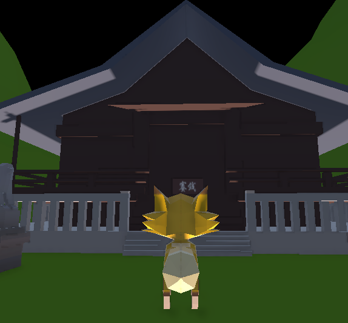
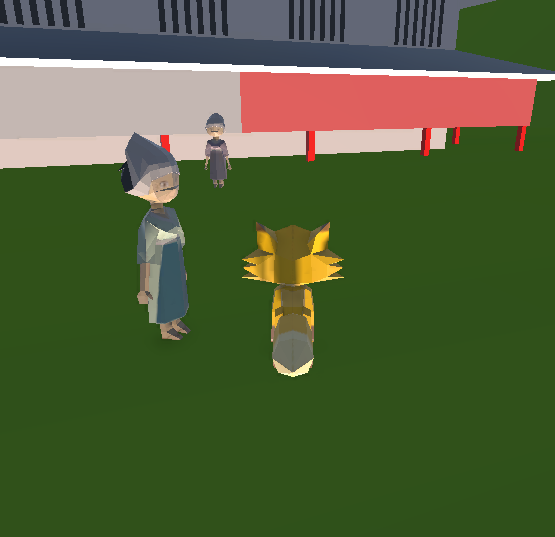

サークルでUnityroomに出展！『GONE狐』

基本情報
- 制作時期
- 大学2年8月（制作期間：1週間）
- 役割
- 9人チーム（担当：進捗管理 / UIデザイン / 広報）
- 使用ツール
- Unity, C#, Git, Illustrator, Photoshop
- リンク
- Unityroom
制作のきっかけ
サークルメンバーの誘いで「Unity 1weekゲームジャム」に参加。「かえす」というお題に対して、童話『ごんぎつね』をベースに、ごんが食べ物を集めて村人と取引し、病気の兵十を助ける「恩返し」の3Dアクションゲームを制作しました。
私は当初プログラマーとしても参加予定でしたが、プロジェクトマネジメントの負荷が高いと判断し、プログラム実装は他メンバーに委任して自身はUIデザインと全体の進捗管理に徹しました。
こだわった点・工夫した点
- 見えないデザインに意味はある？
- 体力ゲージを通して学んだ、プログラマーの欲しいデザイン
タイトル画面のボタンに「狐の耳」を模したデザインを盛り込みましたが、実際にテキストを重ねると文字に隠れてしまい、意図したデザインが伝わらないという状況に陥りました。
細部にこだわるゲームこそ良いということもありますが、せっかくこだわった部分が隠れてしまったらそれには意味があるのでしょうか…
体力ゲージの作成では、単色塗りを避けるべく、見慣れた東急電鉄の車内LCDを参考にしたグラデーションを黄色ベースで作成しました。しかし、実装担当のプログラマーから「プログラム側で動的に色を変えたいから、モノトーン（白黒）で書き出してほしい」と要望を受けました。
この時点でGUIプログラムに不得手があった私は、プログラムから画像の色を制御できることを知らずプログラマーと意図がすれ違ってしまいましたが、この経験から、「他メンバーが欲しいものを知るために、自分の専門分野以外の知識も蓄えるべき」ということを実践的に知り、大学の講義でも専門分野以外にも主体性をもつようになりました。


振り返り・学び
サークルの公式X（旧Twitter）担当を引き受け、完成したゲームの広報活動も行いました。Unityroomでの現在の成果は閲覧数150・評価数26を得ました。
しかし、平均評価を見てみると、楽しさや雰囲気、絵作りなどの6項目全てで3/5程度と、可もなく不可もない評価に落ち着きました。
今後の改善の参考にするためには「どこかが突出して高い、あるいは低い」という尖ったデータが欲しかったという悔しさがあります。
この結果は、万人の60点ではなく誰かの120点になりたいという自分自身の思いを改めて振り返るきっかけになりました。